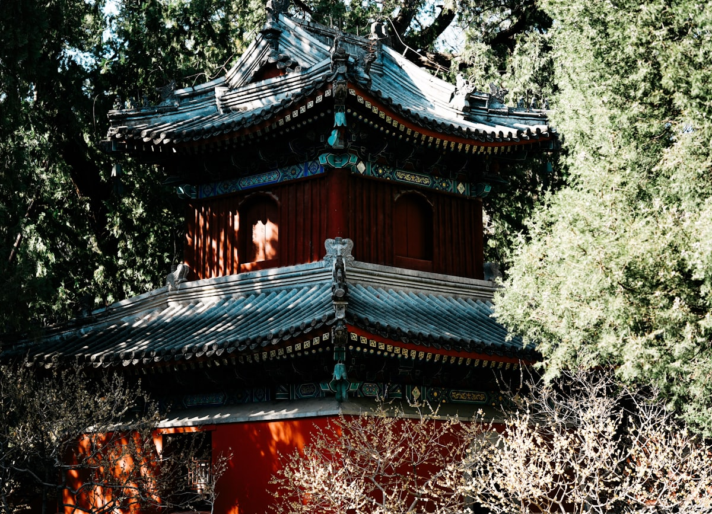
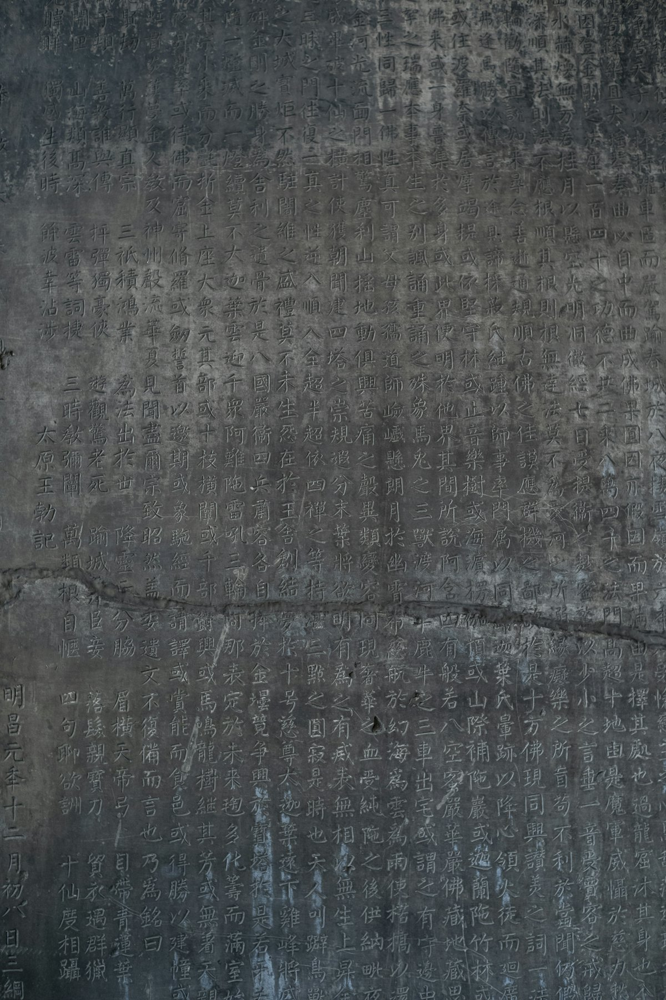
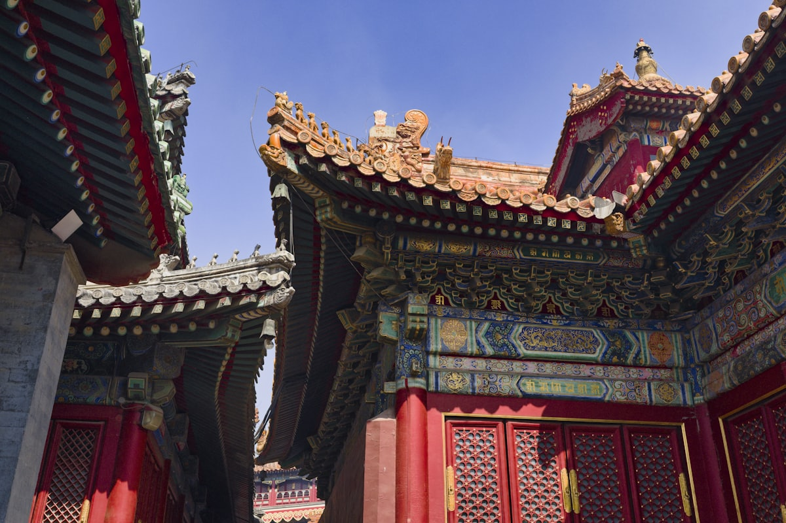
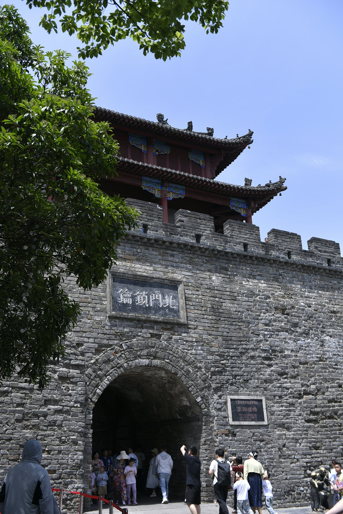
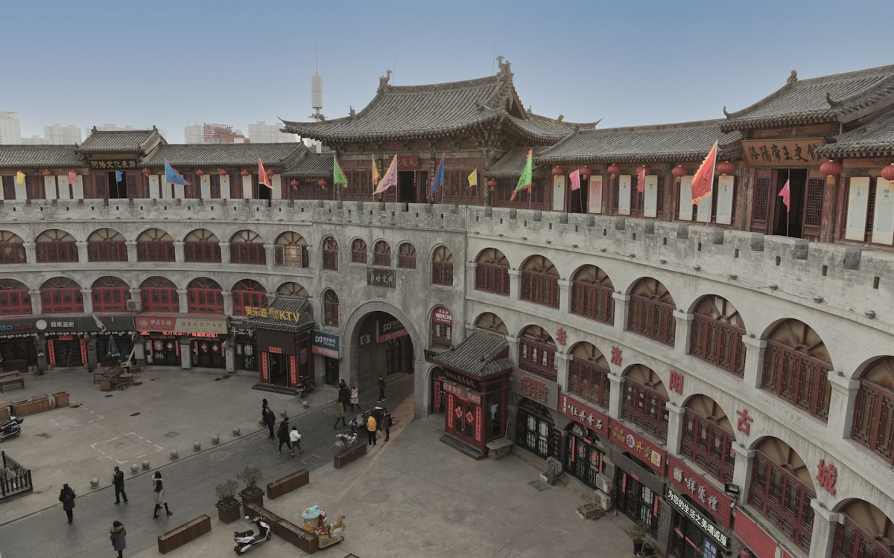
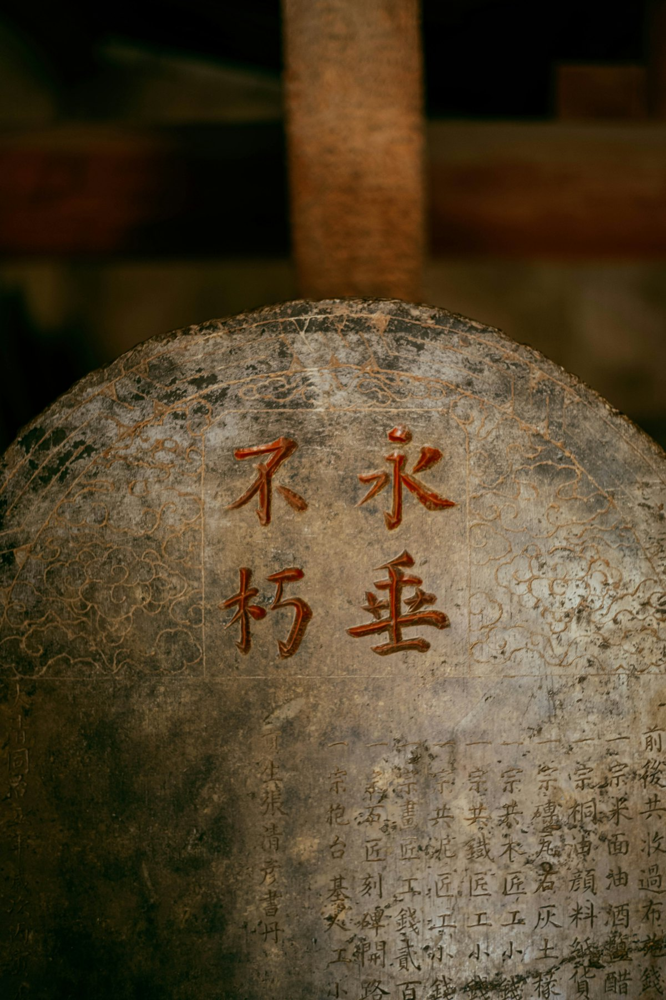

1核心结论
郑州
→
安阳殷墟
→
洛阳
→
登封少林
→
开封
→
返程
🕐 10 天怎么安排最合理
河南是「一部河南史，半部中国史」，中国八大古都里郑州、洛阳、开封、安阳独占其四。10 天刚好串起中原文明主线：先到安阳看殷墟的甲骨文，再到洛阳看龙门石窟与古都风华，西出登封访少林寺，最后在开封感受大宋繁华。省内高铁呈米字形，城市间通勤普遍 1 小时内，非常适合环线游。
| 事项 | 结论 |
|---|---|
| 事项 | 结论 |
| 推荐方案 | 10 天 9 晚（4 城大环线） |
| 返程约束 | 第 10 天下午/晚间返程 |
| 行程链 | 安阳殷墟 → 洛阳龙门 → 登封少林 → 开封宋都 |
| 预算（人均） | 经济 3500–4500 ／ 标准 5500–7000 ／ 舒适 9000–11000 |
| 三件提前事 | ① 龙门/少林门票提前 1–3 天订 ② 旺季酒店提前 2 周 ③ 河南博物院预约（周一闭馆） |
| 季节提醒 | 4–5 月洛阳牡丹季最美；夏季湿热多雨；秋季凉爽适合爬山 |
| 交通卡 | 高铁覆盖 4 城，城际间普遍 0.5–1h |
⚠️ 两个容易忽略的点
① 龙门石窟与少林寺均需实名购票，节假日排队 1 小时起步，务必线上提前买并早到。② 河南 7–8 月多雨闷热，石窟与爬山行程尽量安排在上午，下午避开暴晒与阵雨。
2推荐行程 · 10 天版
以下为 10 天 9 晚的推荐节奏。每日主景点 ≤2 个，洛阳与开封各留 2 晚慢节奏体验。
| 日期 | 行程 | 过夜地 | 主题 |
|---|---|---|---|
| D1 抵郑 | 高铁到郑州东，二七塔夜景 + 中原第一天 | 郑州 | 抵达 + 预热 |
| D2 | 郑州 → 安阳殷墟博物馆（全天）→ 夜返郑州 | 郑州 | 商朝都城 |
| D3 | 郑州 → 洛阳，白马寺 + 洛邑古城夜景 | 洛阳 | 佛国首刹 |
| D4 | 洛阳龙门石窟（全天）→ 丽景门夜市 | 洛阳 | 石窟艺术 |
| D5 | 洛阳博物馆 + 应天门灯光秀（或老君山一日） | 洛阳 | 河洛古都 |
| D6 | 洛阳 → 登封嵩山少林寺（塔林/武术表演） | 登封 | 禅武少林 |
| D7 | 登封 → 开封，清明上河园（含夜场） | 开封 | 大宋繁华 |
| D8 | 开封府 + 包公祠 + 大宋武侠城（可选）→ 鼓楼夜市 | 开封 | 宋都人文 |
| D9 | 开封城墙 → 高铁返郑州，河南博物院（半天） | 郑州 | 中原国宝 |
| D10 返程 | 上午自由活动/采购特产，下午返程 | — | 收尾 |
🧭 路线可调原则
老君山（栾川）往返需一整天，可与 D5 互换或替换洛阳博物馆；登封与开封之间可顺访嵩阳书院、观星台。带老人孩子建议每天大景点压缩到 1 个，龙门与少林各留全天。
3逐小时时间线
以下为 10 天全程的逐小时执行时间线，可当作「当天打开照着走」的清单。标注 ※ 的可选项视体力与天气取舍。
D1 · 抵达郑州
中原枢纽第一天
🚄 抵达日
| 时间 | 事项 |
|---|---|
| 14:00–17:00 | 抵达郑州（高铁到郑州东站，飞机到新郑机场），地铁进城入住二七广场/火车站商圈 |
| 17:30–18:30 | 办理入住，熟悉地铁线路 |
| 19:00–20:30 | 二七纪念塔（免费）：登塔俯瞰郑州夜景，二七广场商圈晚餐（烩面/胡辣汤） |
| 21:00 | 回酒店休息，调整状态 |
郑州是中原交通枢纽，高铁到洛阳/开封/安阳均在 1 小时内，非常适合作为环线起终点。
D2 · 安阳殷墟
甲骨文故乡一日
🏺 殷商日
| 时间 | 事项 |
|---|---|
| 07:30 | 早餐后高铁赴安阳（郑州东 → 安阳东约 50 分钟） |
| 09:30–15:00 | 殷墟博物馆新馆（门票参考 60 元）：后母戊鼎、甲骨窖穴、妇好墓，馆藏青铜重器众多 |
| 12:00 | 馆内或市区简餐 |
| 15:00–16:30 | 殷墟宫殿宗庙遗址（甲骨文出土地）：车马坑、宗庙基址，可顺访王陵遗址 |
| 17:30 | 高铁返回郑州，晚餐（安阳扁粉菜可在市内尝） |
殷墟是世界文化遗产、中国考古圣地，馆内展陈值得预留 4 小时以上，周一闭馆。
D3 · 洛阳白马寺 + 洛邑古城
佛国古都一日
🏮 古都日
| 时间 | 事项 |
|---|---|
| 08:00 | 高铁郑州 → 洛阳龙门站（约 40 分钟），入住老城/西工区 |
| 10:00–13:00 | 白马寺（门票参考 35 元）：中国第一古刹，齐云塔、印度/缅甸/泰国佛殿苑 |
| 13:00–14:00 | 白马寺附近简餐 |
| 15:00–17:30 | 洛邑古城（免费）：文峰塔、老街，看汉服与古建筑 |
| 18:00–20:00 | 洛阳水席晚餐（真不同/老城水席），丽景门夜市 |
洛阳是十三朝古都；水席是招牌，人多去真不同，人少可找老城小店，先点小份试试。
D4 · 洛阳龙门石窟
石刻艺术宝库一日
🗿 石窟日
| 时间 | 事项 |
|---|---|
| 08:00 | 出发龙门石窟（洛龙区，打车/公交 30–40 分钟） |
| 09:00–14:00 | 龙门石窟（门票参考 90 元，含西山/东山）：奉先寺卢舍那大佛、万佛洞、宾阳三洞 |
| 12:00 | 景区内简餐 |
| 14:30–16:30 | 香山寺 + 白园（白居易墓），东岸隔伊河眺望石窟全景 |
| 17:30 | 返回市区，晚上洛邑古城灯光或应天门夜景（可选） |
龙门石窟上午光线最好；隔伊河对岸（东岸）是经典拍摄机位，建议带长焦。
D5 · 洛阳博物馆 / 老君山（二选一）
河洛文化日
🏛 河洛日
| 时间 | 事项 |
|---|---|
| 09:00–13:00 | 方案 A：洛阳博物馆（免费需预约）：夏商周青铜器、唐三彩，镇馆之宝曹魏白玉杯 |
| 13:00–14:00 | 博物馆周边午餐 |
| 14:30–17:00 | 关林（门票参考 40 元）：关公首级葬地，古柏参天 |
| 18:30–20:30 | 应天门遗址灯光秀（免费，19:30 起）：隋唐洛阳城夜景 |
| 20:45 | 回酒店休息 |
若选老君山（栾川，往返需一整天，缆车+金顶），替换掉本日市内行程；夏季山顶凉爽、冬季有雪景，但台阶多，老人孩子慎选。
D6 · 登封嵩山少林寺
禅武合一一日
🥋 禅武日
| 时间 | 事项 |
|---|---|
| 07:30 | 洛阳出发赴登封（大巴/包车约 1.5h） |
| 09:30–15:00 | 嵩山少林寺（门票参考 80 元）：常住院、塔林、藏经阁，武术表演场次提前问 |
| 12:00 | 景区内或景区门口简餐 |
| 15:00–17:00 | 达摩洞 / 三皇寨（可选，体力好的登嵩山） |
| 17:30 | 入住登封市区，晚餐（嵩山烩面） |
少林武术表演通常上午/下午各数场，进场先看时间表；塔林是全国最大古塔群，摄影重点。
D7 · 开封清明上河园
大宋东京一日
🏯 大宋日
| 时间 | 事项 |
|---|---|
| 08:30 | 登封 → 开封（大巴/高铁经郑州约 2h），入住大梁门/龙亭周边 |
| 11:30 | 午餐（开封灌汤包） |
| 13:00–17:00 | 清明上河园（门票参考 120 元）：虹桥、东京食街、勾栏瓦舍表演，建议买含夜演套票 |
| 17:30 | 园内晚餐或回市区 |
| 19:30–21:00 | 《大宋·东京梦华》实景演出（可选，参考 180–300 元） |
清明上河园 1:1 复刻《清明上河图》；下午进园、看演出到晚上是经典玩法，园区很大穿舒适鞋。
D8 · 开封府 + 鼓楼夜市
宋都人文一日
🏮 宋都日
| 时间 | 事项 |
|---|---|
| 08:30–11:30 | 开封府（门票参考 65 元）：开衙仪式、包公断案情景剧 |
| 11:30–13:00 | 午餐：鼓楼/西司夜市周边小吃 |
| 13:30–16:00 | 大宋武侠城（万岁山，参考 60 元，可选）或 包公祠（参考 30 元） |
| 17:00–18:30 | 清明上河园北门外古城墙散步，远眺龙亭 |
| 18:30–21:00 | 鼓楼夜市：灌汤包、炒凉粉、桶子鸡、花生糕 |
开封夜市人气爆棚，20 点后最热闹；吃灌汤包认准「第一楼」系老字号，先咬皮再吸汤。
D9 · 开封 → 郑州 · 河南博物院
中原国宝一日
🏺 中原国宝日
| 时间 | 事项 |
|---|---|
| 08:30 | 高铁开封北 → 郑州东（约 25 分钟） |
| 09:30–12:30 | 河南博物院（免费需预约）：贾湖骨笛、莲鹤方壶、武则天金简，九大镇馆之宝 |
| 12:30–13:30 | 博物院附近午餐 |
| 14:00–16:00 | 郑州商都遗址公园 / 二七广场自由活动 |
| 17:00 | 采购伴手礼（花生糕、道口烧鸡真空装、牡丹饼） |
河南博物院是「中原文明的殿堂」，务必提前 1–3 天预约，周一闭馆，预留半天最从容。
D10 · 返程
采购伴手礼 + 回家
🚄 返程日
| 时间 | 事项 |
|---|---|
| 08:30–10:00 | 自由活动：郑州商都遗址公园或补逛商圈 |
| 10:00–11:30 | 采购伴手礼：开封花生糕、道口烧鸡、信阳毛尖 |
| 11:30–12:30 | 午餐 |
| 13:00–16:00 | 退房，赴郑州东站/新郑机场，返程 |
伴手礼推荐：开封花生糕、道口烧鸡（真空装）、洛阳牡丹饼、信阳毛尖。
4景点图鉴
必去（必去）/ 顺路（顺路）/ 可跳过（可跳过）。
必去
龙门石窟 参考价 90 元
世界文化遗产。奉先寺卢舍那大佛、万佛洞，伊河两岸十万造像。

必去少林寺 参考价 80 元
禅宗祖庭、天下武功出少林。塔林、武术表演，嵩山五乳峰下。

必去殷墟 参考价 60 元
商朝晚期都城、甲骨文出土地。殷墟博物馆新馆、妇好墓。

顺路白马寺 参考价 35 元
中国第一古刹。齐云塔、国际佛殿苑，佛教东传第一站。
 顺路
顺路老君山 参考价 100 元
道教圣地、中原最美云海。金顶道观群、云海日出。

顺路清明上河园 参考价 120 元
《清明上河图》实景再现。虹桥、东京食街、夜游。

可跳过开封府 参考价 65 元
北宋首府、包拯办公地。开衙仪式、包公断案情景剧。

顺路河南博物院 免费（需预约）
华夏文明殿堂。贾湖骨笛、莲鹤方壶、武则天金简。
图片为 Unsplash 主题图（龙门石窟、古寺、古城为河南/中原实景或同主题示意图），用于页面配图。更多免费景点：洛邑古城、应天门遗址、二七纪念塔、开封古城墙。
5路线地图
点击左侧节点可在地图上定位；点击地图 marker 会高亮对应节点。坐标为 WGS-84 转 GCJ-02 纠偏后标注。
6预算明细（三档）
以下为单人、不含购物的估算；门票为旺季参考价，以现场为准。交通按高铁往返计（从华北/华东周边城市出发约 800–1500 元），不同出发地浮动较大。
| 项目 | 经济（3500–4500） | 标准（5500–7000） | 舒适（9000–11000） |
|---|---|---|---|
| 往返交通 | 高铁约 800–1200 | 高铁/飞机约 1500–2500 | 飞机+接送约 3000–4000 |
| 住宿（9 晚） | 青旅/快捷 800–1200 | 连锁酒店 1800–2700 | 古都特色酒店 4500–5500 |
| 门票 | 基础景点约 300 | 含演出套票约 600 | 全含 + 实景演出约 900 |
| 餐饮（10 天） | 600–800 | 1200–1600（含水席） | 2000–2600（老字号） |
| 省内交通 | 高铁+大巴 250–350 | 高铁+包车 400–600 | 包车 700–1000 |
💰 标准档示例账单（人均约 6700 元）
高铁往返 2000 + 住宿 9 晚 2200 + 门票 600 + 餐饮 1400 + 省内交通 500 ≈ 6700 元。主要浮动项是住宿地段与演出门票，提前订可省 500–1000 元。
7备选方案
7.1 只看精华的 6 天版
- D1 抵郑州，河南博物院
- D2 龙门石窟
- D3 少林寺
- D4 洛阳白马寺+应天门
- D5 开封清明上河园
- D6 返程
7.2 牡丹季特别版（4–5 月）
洛阳牡丹节期间王城公园/隋唐城遗址植物园看牡丹（参考 30–50 元），把 D5 换成赏花日；同期酒店与高铁票务必提前 2 周以上预订。
7.3 亲子版调整
带娃推荐：郑州方特、开封大宋武侠城（互动多）、河南博物院青少年讲解；老君山台阶多慎选，石窟与少林各安排半天并备足零食。
8交通与住宿
8.1 河南 ⇄ 各地 交通
| 方式 | 时长 | 参考价 | 备注 |
|---|---|---|---|
| 高铁（推荐） | 视出发地 2–7h | 二等座 200–900 元 | 郑州东/郑州站为枢纽，到 4 城均 1h 内 |
| 飞机 | 视出发地 1–2.5h | 300–1800 元 | 新郑机场地铁/城际入市区 |
| 自驾 | 视出发地 | 高速+停车费 | 洛阳市区停车紧张，景点多有大停车场 |
⚠️ 省内交通核心提醒
河南高铁呈米字形，郑州到洛阳/开封/安阳均 1 小时内；洛阳–登封少林无直达高铁，需乘大巴（约 1.5h）。节假日务必提前购票。
8.2 省内交通
- 高铁：郑州⇄洛阳 40min，郑州⇄安阳 50min，郑州⇄开封 25min
- 城际大巴：洛阳→登封少林约 1.5h，登封→开封约 2h
- 地铁：郑州/洛阳地铁覆盖主要景点与车站
- 打车/网约车：市区短途 10–30 元，去老君山建议包车
- 自驾：省内高速发达，但节假日景区易堵车
8.3 住宿区域推荐
| 区域 | 价格/晚 | 优点 | 短板 |
|---|---|---|---|
| 洛阳老城/西工 | 快捷 200–350 / 特色 400–800 | 近丽景门、应天门，水席多 | 老城停车难 |
| 开封龙亭/大梁门 | 快捷 200–350 | 近清明上河园与夜市 | 旺季景区周边贵 |
| 郑州二七广场 | 快捷 250–400 | 高铁/地铁枢纽，交通便利 | 城市景观一般 |
| 登封市区 | 快捷 180–300 | 近少林寺景区 | 选择较少，偏安静 |
9美食清单
🍜 必吃经典
- 洛阳水席（真不同/老城水席）
- 开封灌汤包（第一楼/黄家）
- 郑州烩面、胡辣汤
- 安阳扁粉菜、道口烧鸡
🥮 伴手礼
- 开封花生糕、绿豆糕
- 道口烧鸡（真空装）
- 洛阳牡丹饼
- 信阳毛尖茶
🍢 夜市小吃
- 开封鼓楼夜市、西司夜市
- 洛阳丽景门夜市
- 郑州二七广场商圈
- 胡辣汤配油馍头是河南早餐灵魂
📍 去哪吃
- 开封鼓楼/书店街（老字号扎堆）
- 洛阳老城（水席+小吃）
- 郑州国棉厂夜市（本地人聚集）
- 景区周边多游客店，认准居民区老店
⚠️ 美食防坑
① 水席人多时排队久，可点双人小份；② 夜市认准本地人排队的摊；③ 开封灌汤包先咬皮再吸汤，别烫嘴；④ 胡辣汤口味偏重，外地人先尝小碗。
10出行贴士
10.1 行前清单
- 身份证、充电宝
- 舒适步行鞋（石窟+少林步行多）
- 防晒霜、遮阳帽（夏季）
- 雨具（7–8 月多阵雨）
- 龙门/少林门票提前 1–3 天
- 河南博物院提前预约（周一闭馆）
- 下载 12306 购省内高铁票
- 关注洛阳牡丹花期与演出场次
10.2 防踩坑
🧳 四条提醒
① 文物类景点周一多闭馆（龙门正常开放，博物院闭馆），排期前先核对；② 老君山海拔 2200+ 米，山顶冷需带外套；③ 打车认正规平台；④ 殷墟范围大，留足半天以上。
🌟 一句话总结
河南是「华夏文明的源头」——殷墟的甲骨、龙门的造像、少林的禅武、开封的市井，10 天刚好把中原五千年走成一条线。提前预约博物院、把洛阳与开封各留 2 晚，剩下的就是慢慢逛。